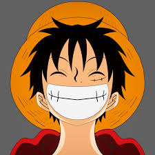
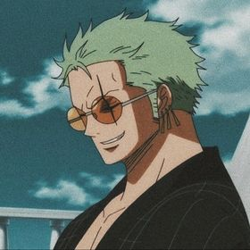
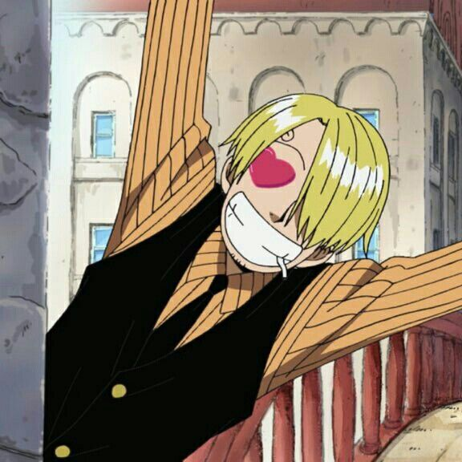
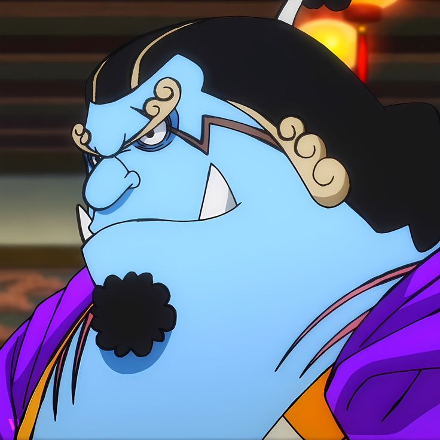

|  |
Monkey D. Luffy
Known as "Straw Hat Luffy" or simply "Straw Hat," is the founder, captain, and strongest fighter of the powerful Straw Hat Pirates. Driven by a fearless pursuit of the legendary treasure of the late Gol D. Roger, Luffy aims to become the new Pirate King and achieve a secret dream known only to his crew and closest friends. He believes that being the Pirate King means having the greatest freedom in the world.
|
Gomu Gomu no Mi Abilities (Rubber Powers):
- Stretching Limbs: His body can stretch, inflate, and expand like rubber, making him immune to blunt force attacks and bullets.
- Gear Second: Increases his speed and strength by pumping blood rapidly through his body.
- Gear Third: Allows him to inflate parts of his body to create giant limbs for powerful attacks.
- Gear Fourth: Enhances his power and elasticity through forms like "Boundman," "Tankman," and "Snakeman" for high-speed, high-impact attacks.
- Gear Fifth (Nika Form): A recently unlocked form that enhances his rubber abilities to almost cartoon-like flexibility, allowing him to reshape his surroundings and body with greater freedom.
- Haki (Conqueror's Haki): While not directly related to the Gomu Gomu no Mi, Luffy also possesses Conqueror's Haki, a rare ability that allows him to assert his willpower over others. He can use it to intimidate enemies, paralyze weaker opponents, and boost his fighting spirit.
|
|  |
Roronoa Zoro
"Pirate Hunter" Zoro is a main combatant of the Straw Hat Pirates, serving as one of their two swordsmen and as a Senior Officer of the Straw Hat Grand Fleet. He is widely recognized as the right-hand man and second-in-command to his captain, Monkey D. Luffy. Previously a bounty hunter, Zoro was the second person to join Luffy’s crew and the first to do so, joining in the Romance Dawn Arc.
| Roronoa Zoro
"Pirate Hunter" Zoro is a main combatant of the Straw Hat Pirates, serving as one of their two swordsmen and as a Senior Officer of the Straw Hat Grand Fleet. He is widely recognized as the right-hand man and second-in-command to his captain, Monkey D. Luffy. Previously a bounty hunter, Zoro was the second person to join Luffy’s crew and the first to do so, joining in the Romance Dawn Arc.
Abilities and Skills:
- Three-Sword Style (Santoryu): Mastery in wielding three swords simultaneously.
- Haki:
- Armament Haki: Enhances attacks and allows for imbuing weapons with invisible armor.
- Observation Haki: Heightens perception, enabling the user to sense opponents and even anticipate their movements in battle.
- Immense Strength and Endurance: Capable of withstanding severe injuries and exerting extreme physical power.
- Enhanced Speed and Reflexes: Quick and agile in combat with impressive reflexes.
- Keen Senses: Exceptional awareness in combat, though often disoriented outside of battle due to his poor sense of direction.
|
|  |
Sanji Vinsmoke
Known as "Black Leg" Sanji, is the cook of the Straw Hat Pirates and a Senior Officer in the Straw Hat Grand Fleet. He is the fifth member to join the crew, coming aboard after the Baratie Arc. Born as Vinsmoke Sanji, he has a complex background tied to the Vinsmoke family. |
Sanji's Abilities:
- Martial Arts – "Black Leg" Style: Sanji is a master of martial arts, specializing in a unique style that focuses on powerful, high-speed kicks. His technique revolves around using his legs exclusively in combat, as he believes his hands should be reserved for cooking.
- Superhuman Physical Strength and Agility: Sanji has enhanced strength, agility, and endurance. His legs can deliver devastating kicks, and he can move at incredible speeds, often outpacing opponents. His agility allows him to dodge attacks with ease, and his physical conditioning makes him capable of withstanding harsh conditions.
- Diable Jambe: One of Sanji's signature techniques, Diable Jambe (Devil Leg), involves him heating his leg to a fiery temperature by spinning rapidly, allowing him to deliver burning, high-impact kicks. It significantly increases the power of his strikes and adds a fiery element to his attacks.
- Sky Walk: Sanji can perform the Sky Walk, which allows him to walk on air by using his powerful legs to propel himself upward and remain airborne for short periods, similar to the Geppo technique used by the Marines' Rokushiki style.
|
|  |
Jinbe
Known as the "Knight of the Sea," is the helmsman of the Straw Hat Pirates and a Senior Officer in the Straw Hat Grand Fleet. He is the tenth member to join the crew, becoming part of the team during the Wano Country Arc |
Jinbe's Abilities:
- Fish-Man Karate: Jinbe is a master of Fish-Man Karate, a martial art that allows him to manipulate water to attack and defend. This technique is especially effective when he is in or near water, but he can also use it on land by using his own body fluids or the moisture in the air.
- Fish-Man Strength and Endurance: As a fish-man, Jinbe possesses superhuman strength, speed, and endurance. His physical strength allows him to engage in powerful hand-to-hand combat, and his endurance makes him highly resilient to damage and exhaustion.
- Water Manipulation: Jinbe can manipulate water in various ways using his Fish-Man Karate. He can create powerful water blasts, defend against attacks by creating water barriers, and even manipulate water currents to increase his combat mobility.
- Armament Haki (Busoshoku Haki): Jinbe can use Armament Haki, which allows him to create invisible armor around his body to enhance his durability and power. He can also coat his attacks with this Haki to make them more destructive, allowing him to deal with Logia-type Devil Fruit users.
- Observation Haki (Kenbunshoku Haki): Jinbe has also mastered Observation Haki, enabling him to sense the presence of others and predict movements during combat. This ability enhances his reaction time and helps him avoid attacks in battle.
- Expert Tactician: Jinbe is a highly intelligent and experienced tactician. His years as a member of the Seven Warlords of the Sea, along with his time as a leader in Fish-Man Island, have made him an excellent strategist, capable of making quick, effective decisions in high-pressure situations.
- Exceptional Swimming and Underwater Combat: As a fish-man, Jinbe is a superb swimmer, capable of moving through water with incredible speed and agility. His ability to fight and think underwater gives him a major advantage in oceanic or aquatic battles.
- Fish-Man Physiology: Being a fish-man, Jinbe has natural adaptations such as enhanced physical durability, heightened senses, and the ability to breathe underwater. His thick scales provide some natural protection, and his physical form is built for underwater movement.
- Unbreakable Will and Loyalty: Jinbe is known for his unshakable sense of loyalty and honor. His strong will and commitment to his friends and allies make him an unyielding force in battle, as he will fight relentlessly to protect those he cares about.
|